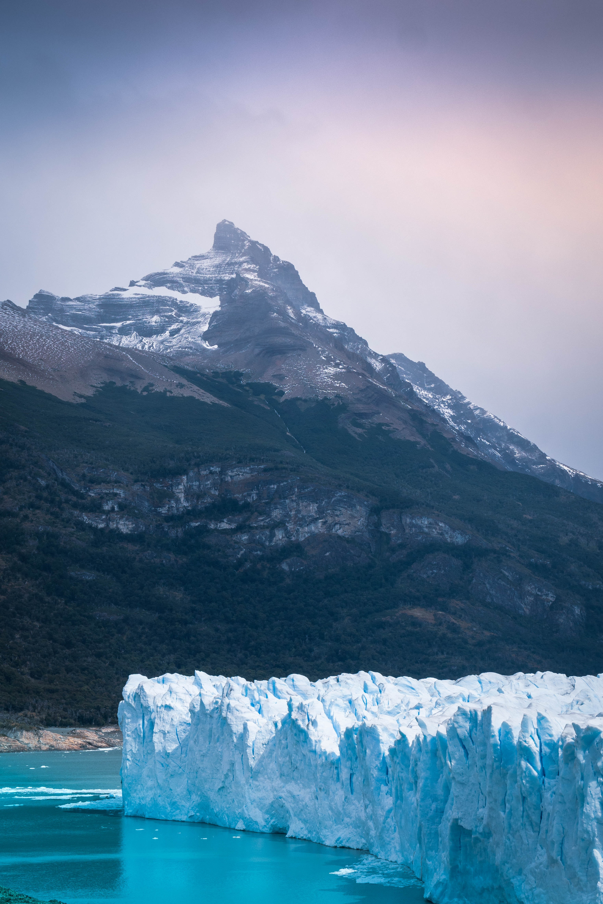

El glaciar Perito Moreno, glaciar Bismarck o glaciar Francisco Gormaz es una gruesa masa de hielo ubicada en el departamento Lago Argentino de la provincia de Santa Cruz, en el sudoeste de la Argentina, en la región de la Patagonia. Se integra dentro del parque nacional Los Glaciares. Este glaciar se origina en el campo de hielo Patagónico Sur teniendo parte de su origen en la región de Magallanes y de la Antártica Chilena de Chile, integrando el Parque nacional Bernardo O'Higgins con el límite demarcado con el Acuerdo de 1998. En su descenso, alcanza el brazo Sur del lago Argentino, con un frente de 5 km de longitud, aflorando sobre el agua con una altura de unos 60 m. Gracias a su constante avance, forma una represa con las aguas del brazo Rico de dicho lago, lo cual genera un desnivel con respecto al resto del lago de hasta 30 m. Por la presión de esta masa líquida se producen filtraciones en el hielo que crean un túnel con una bóveda de más de 50 m de altura. El derrumbe de esta bóveda constituye un inusual espectáculo natural y es uno de los mayores atractivos del parque. El nombre del glaciar hace honor a Francisco Moreno, director del museo de la Sociedad Científica Argentina y activo explorador de la zona austral de ese país.
